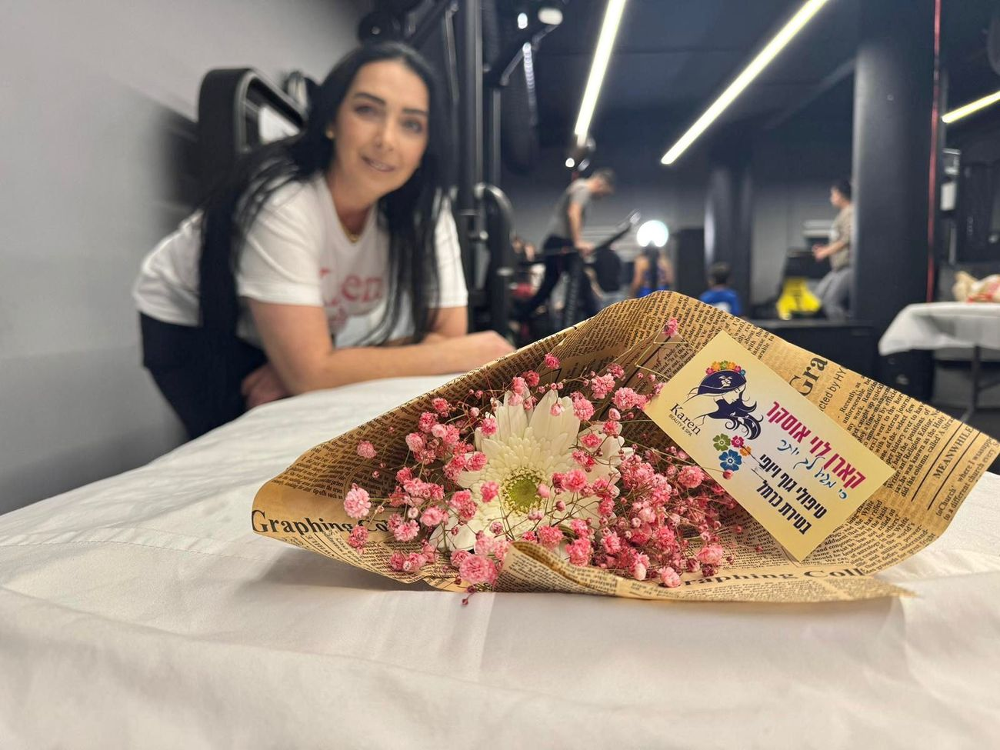
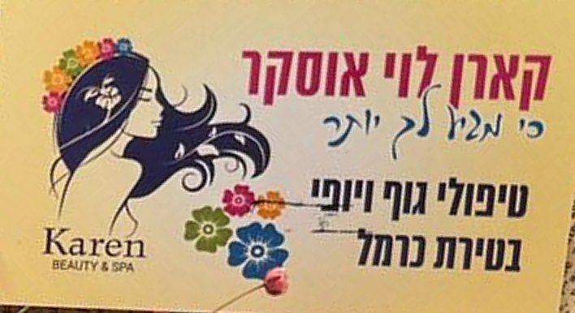

קארן לויKaren Levi
קארן לוי אוסקר, טיפולי גוף ויופי ברחוב האנפה 8 בטירת כרמל: ציפורניים, פדיקור רפואי, עיסוי וספא ראש תאילנדי.Karen Levi Oscar, body and beauty treatments at 8 HaAnafa St, Tirat Carmel: nails, medical pedicure, massage and Thai head spa.
בניית ציפורניים של קארן, על הלב שהיא מצלמת עליוKaren’s nail work, on the heart she always photographs it on

נעים להכיר, קארןMeet Karen
ציפורניים, כפות רגליים, גב וראש. הכול אצלה, ברחוב האנפה בטירת כרמל.Nails, feet, back and head, all at her place on HaAnafa Street in Tirat Carmel.

5.0דירוג בגוגלGoogle rating
55ביקורותreviews
6ימים בשבועdays a week
מכף רגל ועד ראשFrom toe to head
-
תמונה להמחשהIllustrative photo פדיקור רפואיMedical pedicure
טיפול בכף הרגל, בציפורניים ובעור.Care for the feet, the toenails and the skin.
-
עבודה של קארןKaren’s work בניית ציפורנייםNail building
בנייה, צבע וקישוטים, מעדין ועד חגיגי.Building, colour and decorations, from subtle to festive.
-
תמונה להמחשהIllustrative photo עיסויMassage
עיסוי גוף, עם מוזיקה רגועה ברקע.Body massage, with calm music in the background.
-
תמונה להמחשהIllustrative photo ספא ראש תאילנדיThai head spa
טיפול לראש ולקרקפת, בשיטה התאילנדית.A treatment for the head and scalp, the Thai way.
מהשולחן של קארןFrom Karen’s table
עבודות אמיתיות שלה, כמו שצילמה אותן. גררו כדי לסובב.Her real work, as she photographed it. Drag to turn.
5.0
מה כתבו עליה בגוגלWhat people wrote on Google
55 ביקורות בממוצע 5.0. הנה חמש מהן, כלשונן.55 reviews, averaging 5.0. Here are five, translated from Hebrew.
מושלמת ברמות עבודה יוצאת מן הכלל, יחס אישי, סבלנות והרבה אהבה אליפותתPerfect on every level, outstanding work, personal attention, patience and lots of love. The best
חוויה מושלמת מההתחלה ועד הסוף. פדיקור רפואי ברמה גבוהה מאוד, עבודה נקייה ומדויקת ! אין ספק שאחזור שוב A perfect experience from start to finish. A very high-level medical pedicure, clean and precise work! No doubt I’ll be back
מקצועית,מסאז שהוא פירוק והרכבה וגם מרגיעה בו זמנית . נעימות מרגיעות ברקע היה מדהים . ממליץ בחום.Professional, a massage that takes you apart and puts you back together, and relaxing at the same time. Soothing tunes in the background, it was amazing. Warmly recommended.
קארן לוי היא התשובה לכל מה שאני צריכה, תמיד מפנקת בבניית ציפורנים עם קישוטים נהדרים, עושה עיסויים נהדרים, אני מבקרת את קארן לפחות פעמיים בחודש לבניית ציפוניים ועיסויים פינוק אמיתי ומהנהKaren Levi is the answer to everything I need: always a treat with nail building and wonderful decorations, and great massages. I visit Karen at least twice a month for nails and massages. A real, enjoyable treat
הייתי אצל קארן בספא ראש תאילנדי קיבלתי שובר מתנת יום הולדת נהניתי מכל רגע חוויה חוץ גופית ויש לציין שיש לה אנרגיות סופר טובות יצאתי בהרגשה הכי כיפית שיש מומלצתת ביוותררר !!!!!!!I had a Thai head spa at Karen’s, a birthday gift voucher. I enjoyed every moment, an out-of-body experience, and she has super good energy. I left feeling great. Highly recommended!!!!!!!
כתבו לקארןWrite to Karen
בחרו טיפול ויום, וההודעה מוכנה לשליחה.Pick a treatment and a day; the message is ready to send.
לקארן, בוואטסאפTo Karen, on WhatsApp
לשלוח לקארןSend to Karenהאנפה 8, טירת כרמל8 HaAnafa St, Tirat Carmel
שעותHours
וואטסאפ לקארןWhatsApp Karen
052-599-9549
להתקשרCall
052-599-9549
מה אפשר לעשות אצל קארן?What can I book with Karen?
בניית ציפורניים וקישוטים, פדיקור רפואי, עיסוי וספא ראש תאילנדי.Nail building and decorations, medical pedicure, massage and Thai head spa.
אפשר לתת טיפול במתנה?Can I give a treatment as a gift?
אחת הלקוחות כתבה שהגיעה עם שובר מתנה ליום הולדת. כתבו לקארן ושאלו.One client wrote that she came with a birthday gift voucher. Message Karen and ask.
איך קובעים?How do I book?
בטלפון או בוואטסאפ: 052-599-9549.By phone or WhatsApp: 052-599-9549.